Experience
ePropulsion
- Led the ADAS team in designing and developing patented advanced driver assistance algorithms including virtual anchor, heading hold, and 360° joystick control; currently deployed on a wide variety of vessels in 15+ countries
- Redesigned and optimised firmware architecture written using ROS2, C++ and Python, boosting runtime efficiency by 40% and reducing memory usage by 30%
- Developed a prototype of an autonomous navigation system for boats with minimal hardware, using a combination of traditional methods and reinforcement learning techniques achieving path accuracy of over 80%
- Created custom CI/CD pipelines with integrated Gazebo simulation for automated software testing and deployment, achieving 80% test coverage and reducing manual testing time by over 50%
Rice Robotics
- Developed multimedia pipelines to enable live video streaming in 4K, recording, two way intercom and deep learning inference using Gstreamer, Python, and Typescript, reducing processing and memory requirements by 80%.
- Trained and optimized computer vision models to perform various tasks including mask, gate and intruder detection, achieving over 90% accuracy on limited hardware using PyTorch, ONNX and OpenVINO.
- Improved obstacle avoidance and self docking success rate by implementing a graceful controller for charger detection and docking at firmware level using C++.
Robot Data
- Developed computer vison models for real world use cases using Tensorflow and Pytorch, optimized and deployed inference on edge devices using Docker, TensorRT and Nvidia Deepstream SDK.
- Implemented real time face mask detection in conjunction with temperature checking with precision of over 95%.
- Setup machine learning pipeline using Kubernetes and Kubeflow to streamline data pre-processing and model creation, improving efficiency by 40%.
Hanson Robotics
- Co-authored paper titled A Neuro-Symbolic Humanlike Arm Controller for Sophia the Robot, researching the use of Convolution Neural Networks coupled with symbolic AI for object grasping. (Link)
- Constructed kinematic URDF representation of robotic arms to be used in simulation of intricate movements.Implemented AI behavior tree algorithms to enable complex behavior patterns on Sophia, integrating with the Hanson Robotics SDK.
- Improved Sophia’s human-robot interaction heuristics and reduced interaction delay by 50%.
Makerbay
- Worked on the coral reef mapping drone that automates the mapping of coral reefs.
- In charge of the training and deployment of onboard neural network to classify coral types. Built using Tensorflow and Keras
- Assisted in modifying electronic components to ensure accurate mapping and stitching of images.
Quokka Reward
- Worked directly under the CTO as Full Stack developer for the Quokka Rewards platform.
- Responsible for the development of Django Restful API as well as data analytics to show effectiveness of the platform.
The University of Hong Kong
- Working under Dr. Joe C.H. Yuen on building a cloud-based AI Chabot that helps students learn how to code.
- Responsible for the full stack construction and deployment of the chatbot analyzing hundreds of student submissions for common mistakes.
Education

The University of Hong Kong

Stafford International School
Projects & Research
Times new RPG
Time loop based game built using C++ and RayLib. Bosses trained with reinforcement earning to continously learn from player
C++ Pytorch RaylibNewsCrunch
Aggregation and summarisation of daily news using a combination of statistical and deep learning NLP techniques.
Web Scraping Django NLTKRecycleNet
Deep Learning model to classify different types of waste. Built on Keras using transfer learning and fine tuining. Deployed using flask and AWS
Python Pytorch Deep LearningFederated Learning in Robots
Using federated Learning to continously upgrade Face detection and Chatbot models. Tested on the Nao Robot.
Networking Deep Learning NLPPointPillarsNet
Implemetation of pointpillars net point cloud object detection on the ZCU 102 FPGA board using VITIS AI
C Pytorch FPGAInterests
Some hobbies I currently enjoy are collecting and restoring film cameras, scuba diving and talking about why Goodzila is the perfect name for a dog
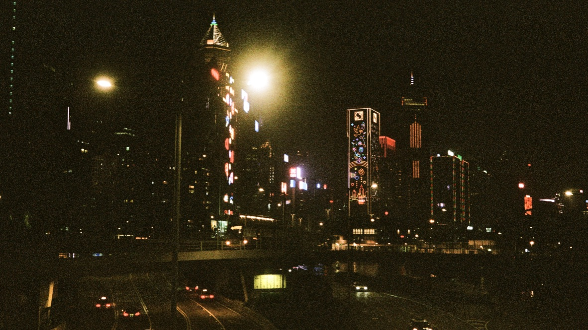 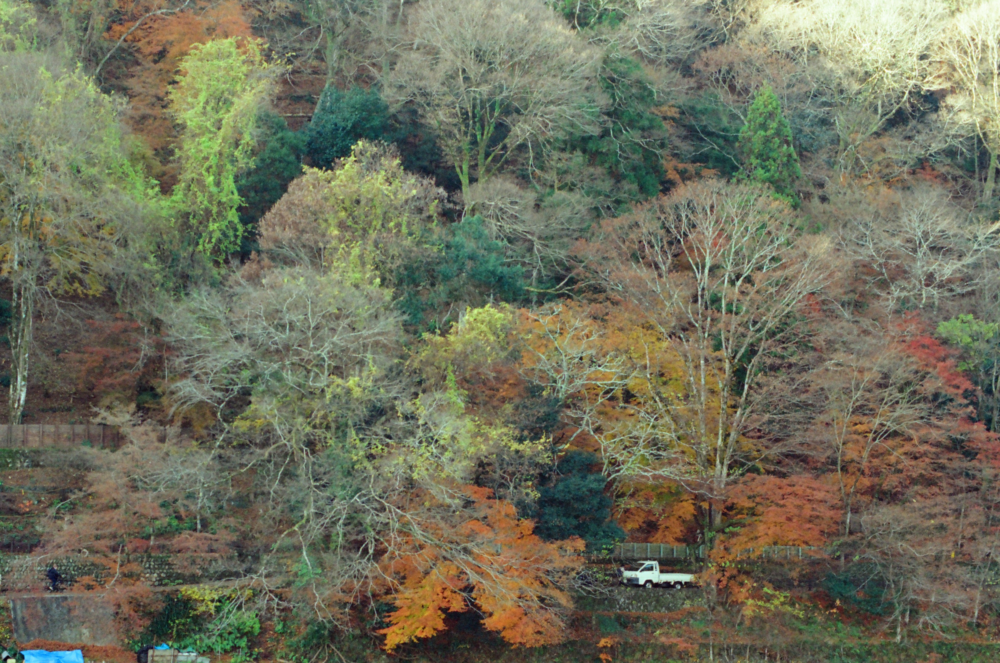
 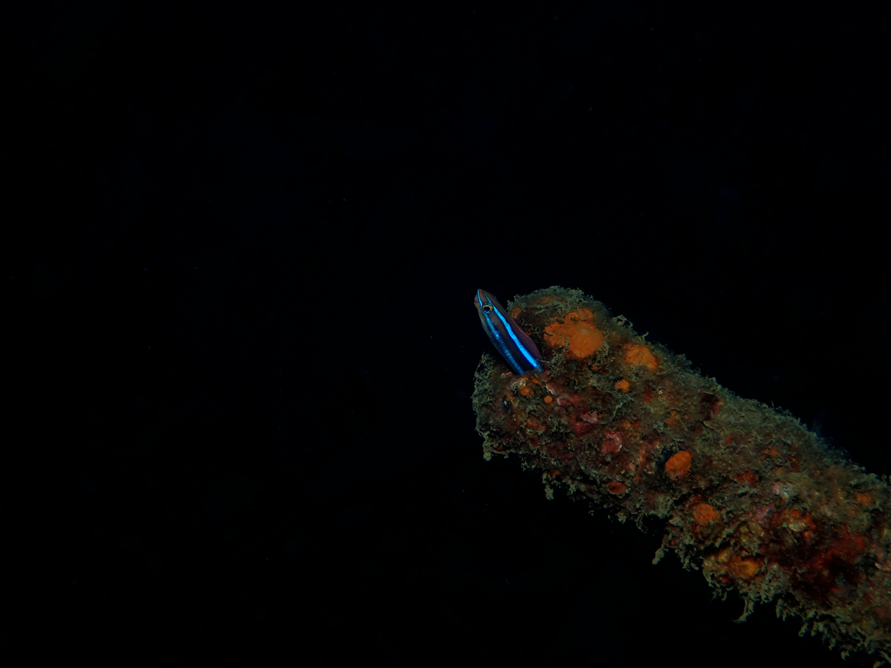
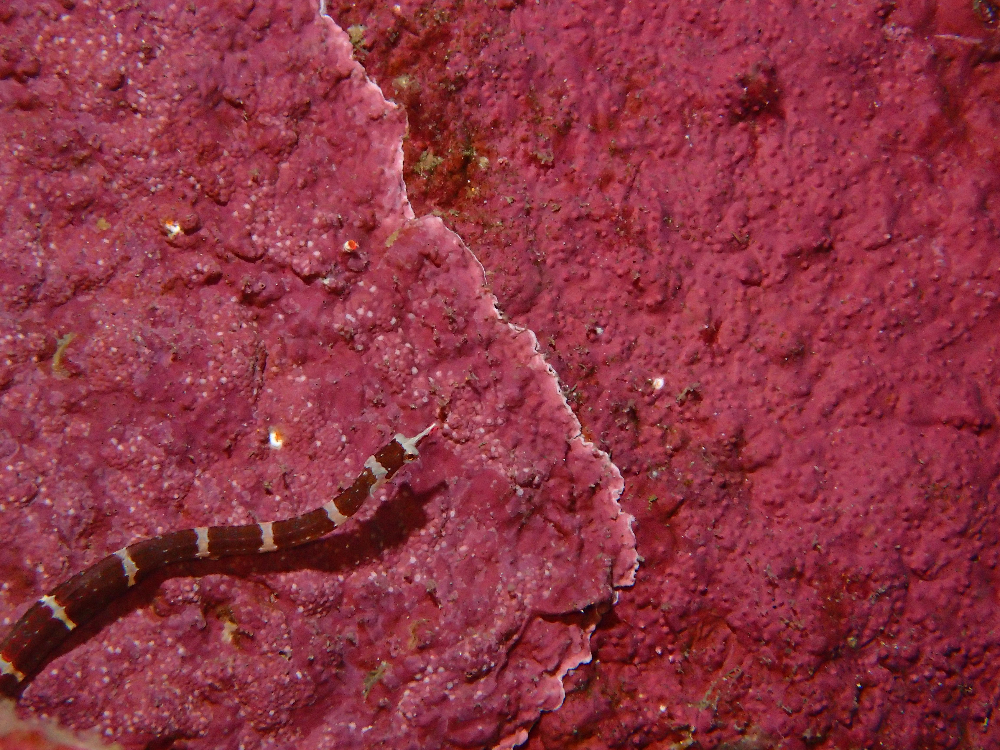
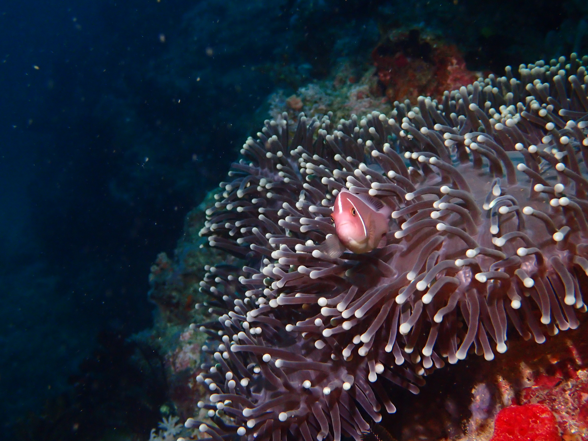
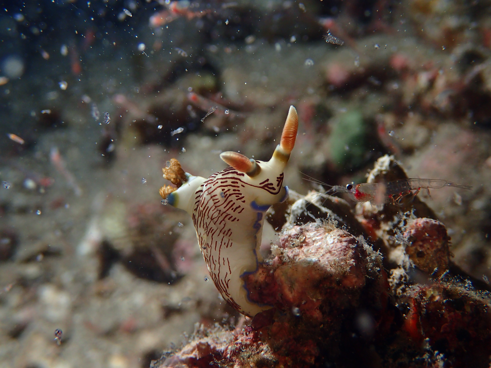
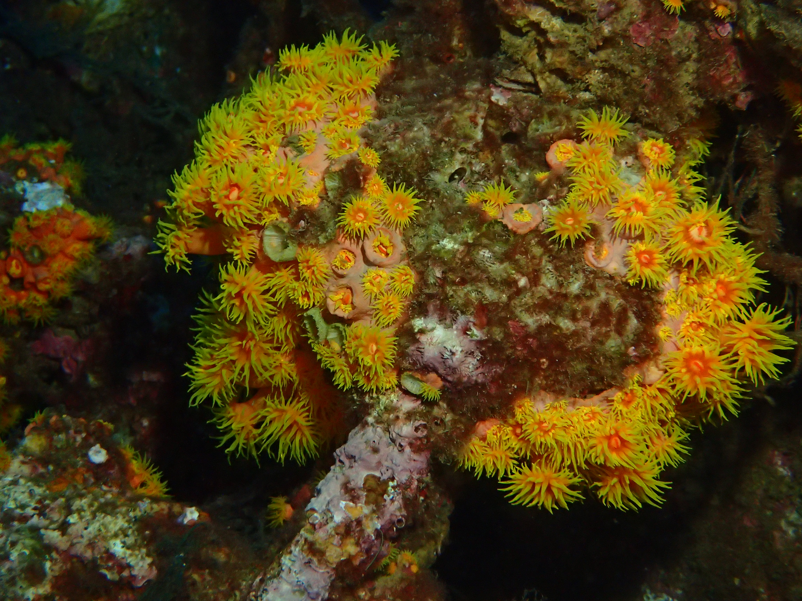
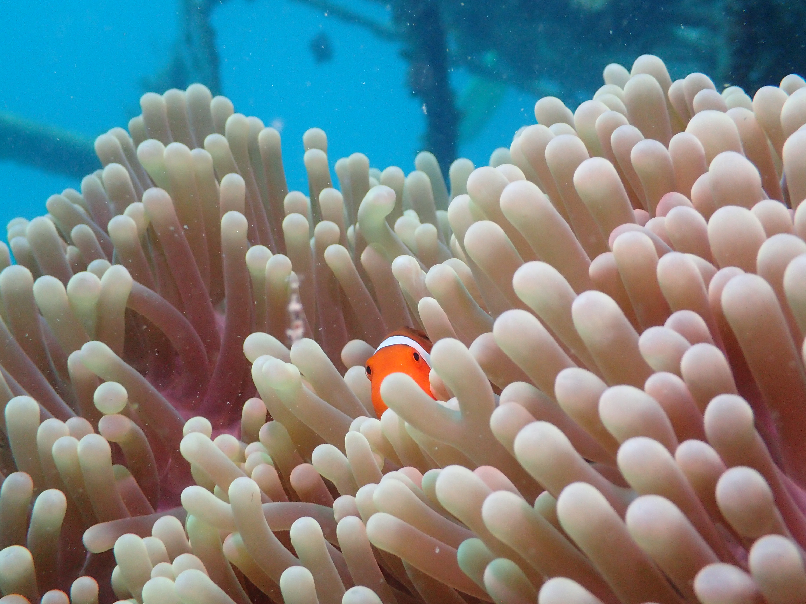
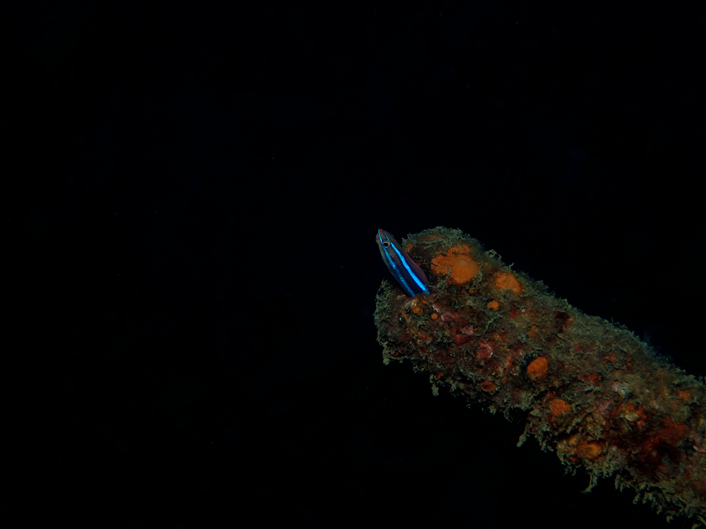
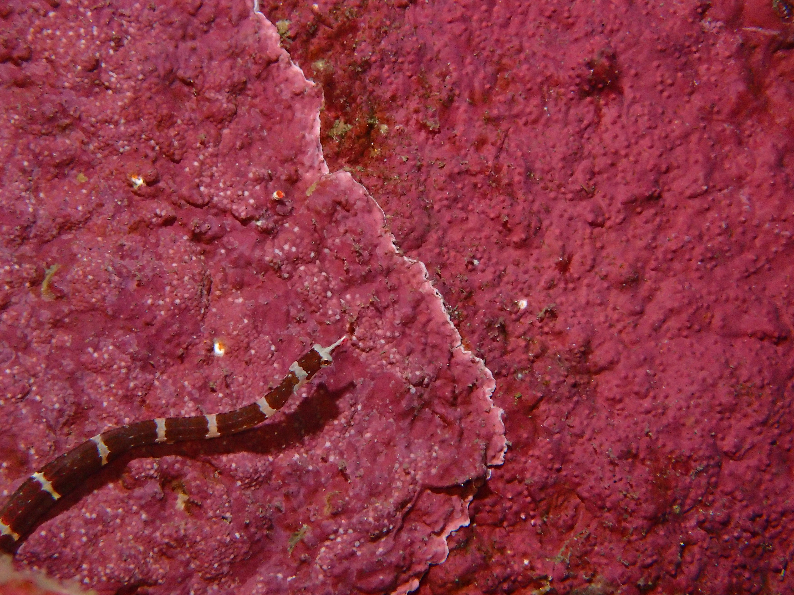
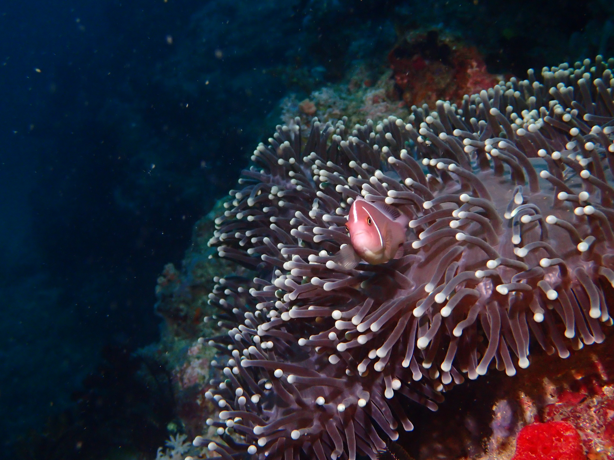
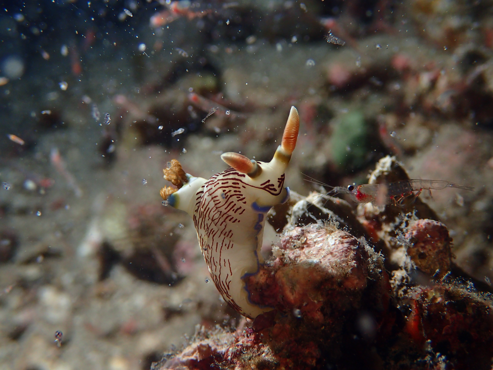
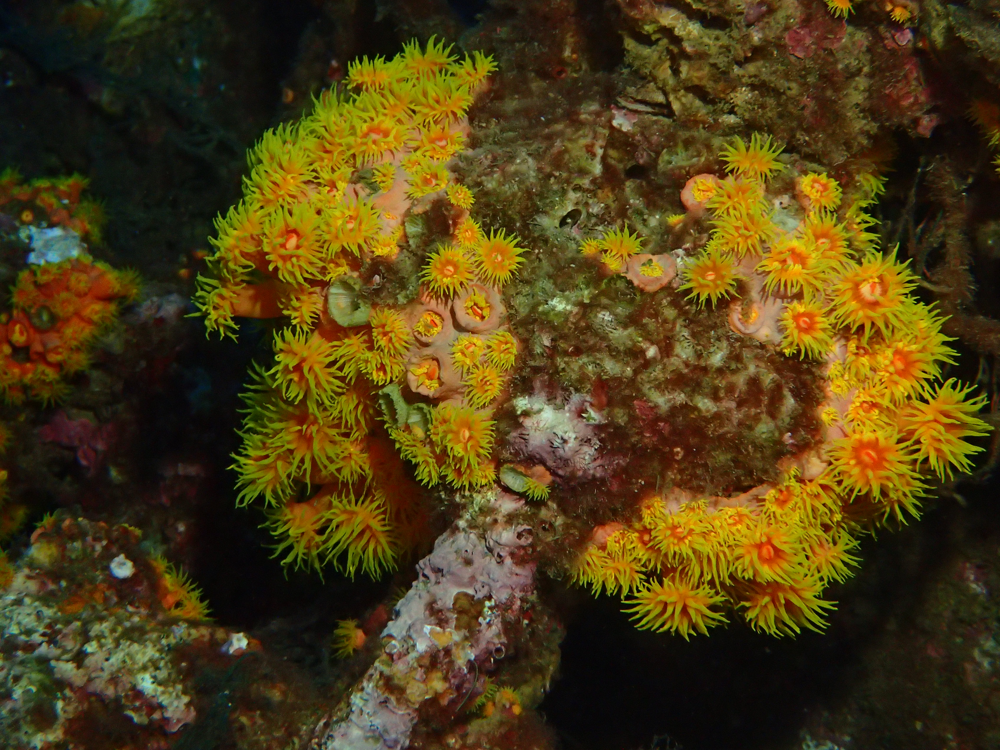
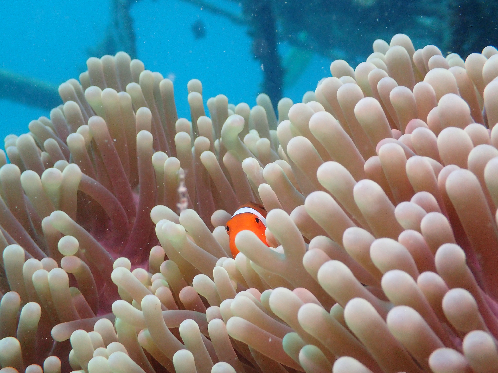
Awards & Certifications
- Awarded HKU engineering faculty best Final Year project presentation
- Awarded $48,00 by the Gallant Ho Fund to lead a team of HKU students on an experiential learning trip in the Philippines to test the coral reef mapping drone in partnership with UOP.
- Funding to conduct research on marine robotics at the HKU Innovation Wing.
- Selected as mentor for HKU STEM 19.
- Awarded 1st place at HKU Rube Goldberg machine competition in 2018.
- Awarded HKU Foundation Scholarship covering tuition upon admission.
- Awarded HKSAR Government Scholarship.
- Awarded Outstanding Cambridge Learner Award for Advanced level results in 2017.